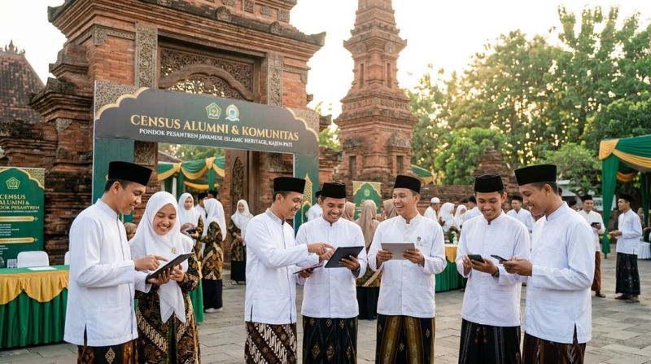
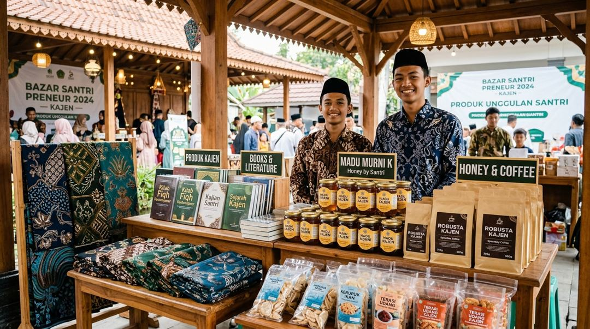
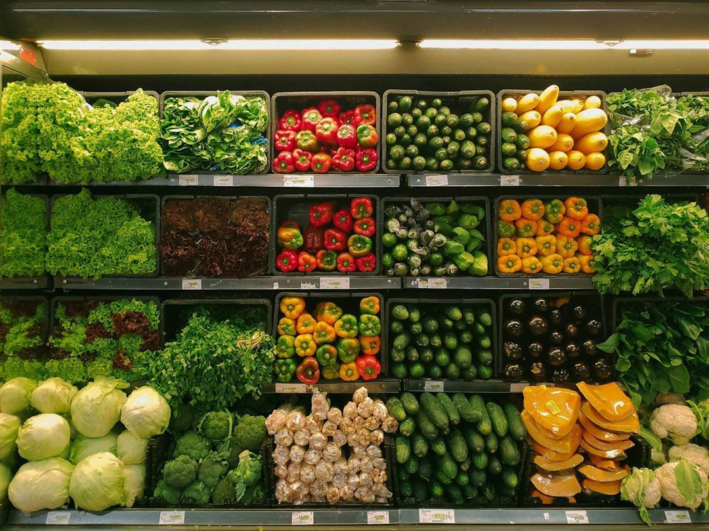
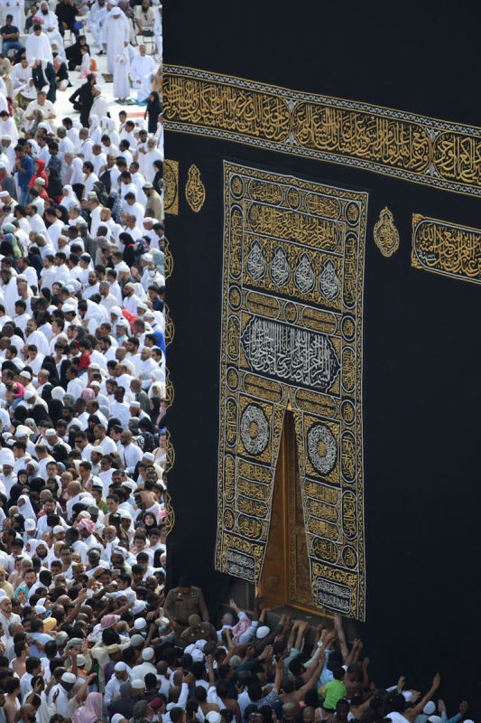
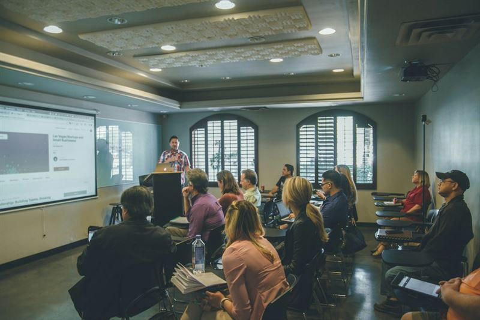
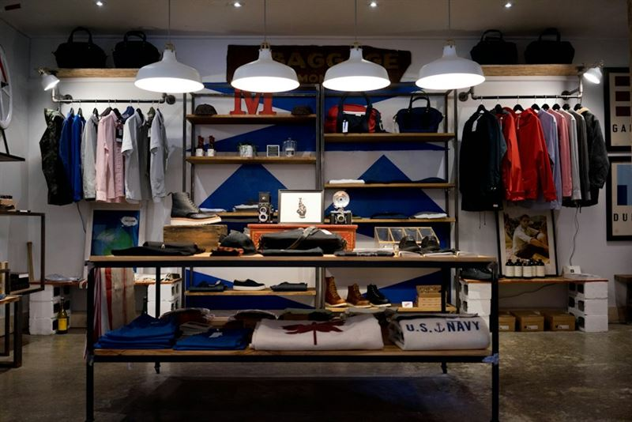

Katalog Produk Usaha
Headline
Pelayanan Terbaik untuk Umat & Alumni di Kota Wali Kabupaten Demak
Portal resmi Pengurus Cabang KMF Kabupaten Demak. Menghubungkan ribuan santri dan alumni Perguruan Islam Mathali'ul Falah (Kajen, Pati) di 14 kecamatan dalam bingkai ukhuwah, tradisi salaf, dan kemaslahatan Fiqh Sosial.

Konsolidasi Pengurus Cabang KMF Demak
Masa Khidmah 2024–2029 · Mempererat Ukhuwah se-Kabupaten
"Alumni Mathali'ul Falah di bumi Demak hadir menyatukan potensi keilmuan santri demi kemaslahatan umat berlandaskan Fiqh Sosial."
K.H. Nurul Huda, M.Pd.I.
Ketua Pengurus Cabang KMF Demak
Merajut Ukhuwah Santri Kajen, Mengabdi untuk Kemaslahatan Demak
Keluarga Mathali'ul Falah (KMF) Cabang Demak adalah organisasi resmi yang mewadahi para alumni Perguruan Islam Mathali'ul Falah (PIM) Kajen, Margoyoso, Pati di wilayah Kabupaten Demak. Berbekal spirit nilai santri Shalih Akram dan warisan paradigma Fiqh Sosial gagasan KH. MA. Sahal Mahfudh, kami hadir sebagai jembatan persaudaraan dan motor penggerak kebaikan bagi jama'ah serta masyarakat luas.
Akar PIM Kajen (1912)
Mewarisi keteladanan KH. Mahfudh Salam dan Masyayikh dalam membentuk kepribadian saleh nan alim.
Jejaring 14 Korwil
Mengonsolidasikan alumni di Demak Kota, Bonang, Mranggen, Karanganyar, hingga Wedung secara terpadu.
Ekonomi & Filantropi
Menggerakkan bursa niaga bersama, iuran gotong royong, infaq mandiri, serta beasiswa santri Demak.
Fiqh Sosial Aplikatif
Respon konkret tanggap banjir Demak, advokasi santri, bimbingan keluarga sakinah, dan kajian kitab kuning.
Pelayanan Terpadu & Berkelanjutan untuk Jama'ah
Enam pilar program kerja strategis KMF Cabang Demak yang dirancang untuk mempererat ukhuwah, mendampingi kebutuhan ummat, dan menggerakkan potensi alumni Kajen di seluruh Kota Wali.
Sensus Mandiri & KTA Digital Santri
Pemutakhiran basis data resmi santri dan alumni PIM Kajen di 14 kecamatan Demak dengan kartu tanda anggota digital ber-QR Code terverifikasi.

Bursa Usaha & Kemitraan Niaga
Etalase digital promosi usaha, toko, kuliner, dan jasa alumni Kajen untuk memperluas pasar dan mengokohkan kemandirian ekonomi jama'ah.
Portal Ibadah & Fiqh Sosial
Akses hisab waktu sholat presisi koordinat Demak, wirid Masyayikh Kajen, teks Tahlil, Yasin, Maulid Diba', dan kajian Fiqh Sosial KH. Sahal.

Wakaf, Sedekah & Tanggap Bencana
Penyaluran wakaf tanah/gedung sekretariat cabang, infaq selapanan gotong royong, zakat, peduli beasiswa santri, serta tanggap bencana Demak.

Majelis Selapanan & Ziarah Masyayikh
Pertemuan rutin selapanan keliling 14 koordinator kecamatan, ziarah maqbaroh Masyayikh Kajen, bahtsul masail, dan sarasehan ukhuwah alumni.

Sekretariat & Surat Rekomendasi
Layanan administrasi legalitas alumni, penerbitan surat rekomendasi studi/pesantren, pengesahan kepengurusan korwil, dan rilis warta cabang.
Tokoh Masyayikh & Dewan Penasihat KMF Demak
Meneladani uswah hasanah para Masyayikh Kajen dan sesepuh alumni di Demak dalam membimbing ukhuwah serta keilmuan umat.
Jejaring Khidmah Terbesar Santri Kajen di Bumi Kota Wali
Merekam jejak langkah ukhuwah, kajian keilmuan, dan gotong royong alumni di 14 kecamatan se-Kabupaten Demak.
PIM Kajen Margoyoso
Bintoro Demak Kota
Sensus Mandiri

Bursa Niaga Alumni
Ziarah Maqbaroh
Aplikasi Resmi KMF Demak di Genggaman Tangan
Dirancang dengan teknologi Progressive Web App (PWA) modern tanpa perlu unduh dari PlayStore yang berat. Akses cepat kartu tanda anggota santri digital, direktori usaha, serta jadwal sholat hisab Demak secara instan dan hemat kuota.
KTA Santri Digital
Bukti keanggotaan sah alumni Kajen dengan QR Code verifikasi.
Hisab Waktu Sholat
Hisab presisi titik koordinat 14 kecamatan di Kabupaten Demak.
Pencarian Usaha
Temukan warung, toko, & jasa terdekat milik sesama santri Kajen.
Lelayu & Duka
Solidaritas kirim doa dan takziah untuk keluarga besar santri.
Ahmad Fauzi, S.Pd.
Alumni Mathole' 2008Butuh Surat Rekomendasi, Legalisasi Santri, atau Bantuan Darurat?
Sekretariat Pengurus Cabang KMF Kabupaten Demak siap mendampingi kebutuhan administrasi santri, verifikasi keanggotaan, surat rekomendasi studi/pesantren, serta respon cepat tanggap kebencanaan di wilayah Demak.
Layanan Terpadu Cabang
Respon cepat Sekretariat KMF Demak
Data alumni terlindungi & dirawat jam'iyyah
Agenda & Khataman
Etalase Usaha Santri Kajen di Demak
"Fiqh tidak boleh berhenti pada teks hukum yang beku, melainkan harus hadir sebagai solusi sosial dan pemberdaya martabat umat manusia."